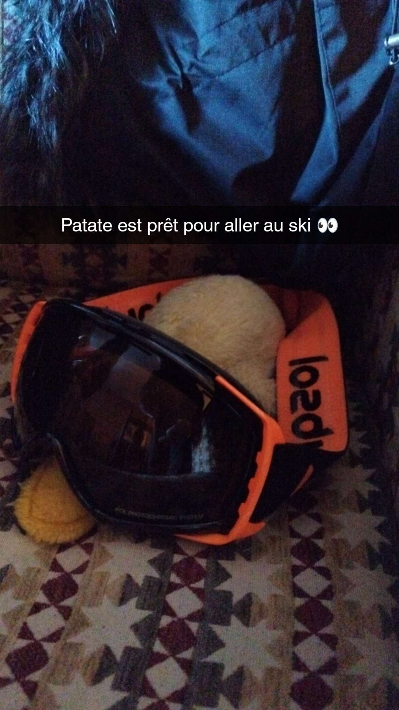

Incroyable un coin coin au ski du jamais vu !!!!!
Un jour, j’étais en paix dans ma mare et on m’a kidnappé. J’ai rien compris à ce qui se passait mais comme je suis le meilleur je savais que je n’avais pas besoin de paniquer. J’ai fini par comprendre que mon ravisseur n’avait que de bonnes intentions. Grâce à lui j’ai pu …. ALLER AU SKIIIIIIIII !!!
La neige est partout, c'est trop cool ! Il m’a fait visiter notre chalet, il est trop beau avec vue sur les montagnes. On a directement chaussé nos skis pour la première fois ! J'ai fait que de tomber, c’était rigolo coin. Mon moniteur m'a appris plein de trucs. On a mangé en haut de la montagne et après ça on a fait une randonnée en raquettes. j’ai même vu des traces d'animaux dans la neige. Après, on est allés à la piscine, c'était chaud et relaxant.

On a visité un vieux village où on a pu goûter à un fromage local trop bizarre et le soir, on a mangé une fondue, j'ai adoré ! On a joué dans la neige toute la matinée, l'après-midi, on est allés au spa. On a fait du ski hors-piste avec un guide, au début j’avais peeeuur, mais ils ont réussi à me mettre à l’aise et on a bien rigolé ! Après avoir mangé en plein air, on a fait une bataille de boules de neige avec les esclaves, je les ai tous battus (euhhh … dans le jeu bien sûr ^^). Pour le dernier jour, j’ai fait une dernière descente tout seul comme un grand. J’ai même essayé de faire un saut comme les pros.
Et voilà, il était déjà l’heure de rendre nos skis et de rentrer auprès de ma maman.